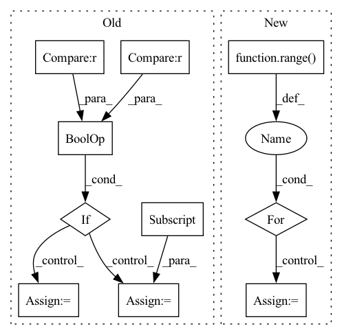

Pattern ID :4958

Before Change
losses, pred = model(image, label)
if "ocr" in config.MODEL.NAME:
if epoch <= config.TRAIN.FREEZE_EPOCHS and config.TRAIN.FREEZE_LAYERS == "extra":
pred = pred[0]
else:
pred = pred[1]
if "align" in config.MODEL.NAME:
pred = F.upsample(input=pred, size=(
size[-2], size[-1]), mode="bilinear", align_corners=True)
After Change
reduced_confusion_matrix = reduce_tensor(confusion_matrix)
confusion_matrix = reduced_confusion_matrix.cpu().numpy()
for i in range(nums):
pos = confusion_matrix[..., i].sum(1)
res = confusion_matrix[..., i].sum(0)
tp = np.diag(confusion_matrix[..., i])
IoU_array = (tp / np.maximum(1.0, pos + res - tp))
mean_IoU = IoU_array.mean()
In pattern: SUPERPATTERN
Frequency: 3
Non-data size: 10
Instances
Fragment ID: 17399385
Project Name: chenjun2hao/ddrnet.pytorch
Commit Name: 3092804679400669548d1e5d9ddec0d9a48912f9
Time: 2019-12-09
Author: yuhui@full-resolution-node.cpci2sm3to0ezk22e1vhiccc3h.jx.internal.cloudapp.net
File Name: lib/core/function.py
M Class Name: AnonimousClass
N Class Name: AnonimousClass
M Method Name: validate(4)
N Method Name: validate(5)
M Parent Class:
N Parent Class:
M File Name: lib/core/function.py
N File Name: lib/core/function.py
M Start Line: 91
M End Line: 142
N Start Line: 101
N End Line: 155
'>
Before Change
last_ts = video_capture.get(0)
has_frames, frame = video_capture.read()
if last_ts >= frame_ts and frame_idx < video_length_read:
if frame_idx <= video_length_read:
frame_ts = frame_ts + 1000
frame = Image.fromarray(cv2.cvtColor(frame,cv2.COLOR_BGR2RGB))
frame = self.transform(frame)
transformed_video[frame_idx] = frame
frame_idx = frame_idx+1
video_capture.release()
After Change
frame_idx += 1
if video_read_index < video_length_read:
for i in range(video_read_index, video_length_read):
transformed_video[i] = transformed_video[video_read_index - 1]
video_capture.release()
video[i_type] = transformed_video
'>
Fragment ID: 17399401
Project Name: sunwei925/compressedvqa
Commit Name: 09b7b06f419c50f543d05799599f367bfc40e56d
Time: 2022-05-09
Author: sunwei925@163.com
File Name: data_loader.py
M Class Name: VideoDataset_FR
N Class Name: VideoDataset_FR
M Method Name: __getitem__(2)
N Method Name: __getitem__(2)
M Parent Class: data.Dataset
N Parent Class: data.Dataset
M File Name: data_loader.py
N File Name: data_loader.py
M Start Line: 123
M End Line: 157
N Start Line: 137
N End Line: 164
'>
Before Change
last_ts = video_capture.get(0)
has_frames, frame = video_capture.read()
if last_ts >= frame_ts and frame_idx < video_length_read:
if frame_idx <= video_length_read:
frame_ts = frame_ts + 500
frame = Image.fromarray(cv2.cvtColor(frame,cv2.COLOR_BGR2RGB))
frame = self.transform(frame)
transformed_video[frame_idx] = frame
frame_idx = frame_idx+1
video_capture.release()
After Change
frame_idx += 1
if video_read_index < video_length_read:
for i in range(video_read_index, video_length_read):
transformed_video[i] = transformed_video[video_read_index - 1]
video_capture.release()
return transformed_video, video_score, video_name
'>
Fragment ID: 17399391
Project Name: sunwei925/compressedvqa
Commit Name: 09b7b06f419c50f543d05799599f367bfc40e56d
Time: 2022-05-09
Author: sunwei925@163.com
File Name: data_loader.py
M Class Name: VideoDataset_NR
N Class Name: VideoDataset_NR
M Method Name: __getitem__(2)
N Method Name: __getitem__(2)
M Parent Class: data.Dataset
N Parent Class: data.Dataset
M File Name: data_loader.py
N File Name: data_loader.py
M Start Line: 45
M End Line: 79
N Start Line: 55
N End Line: 82